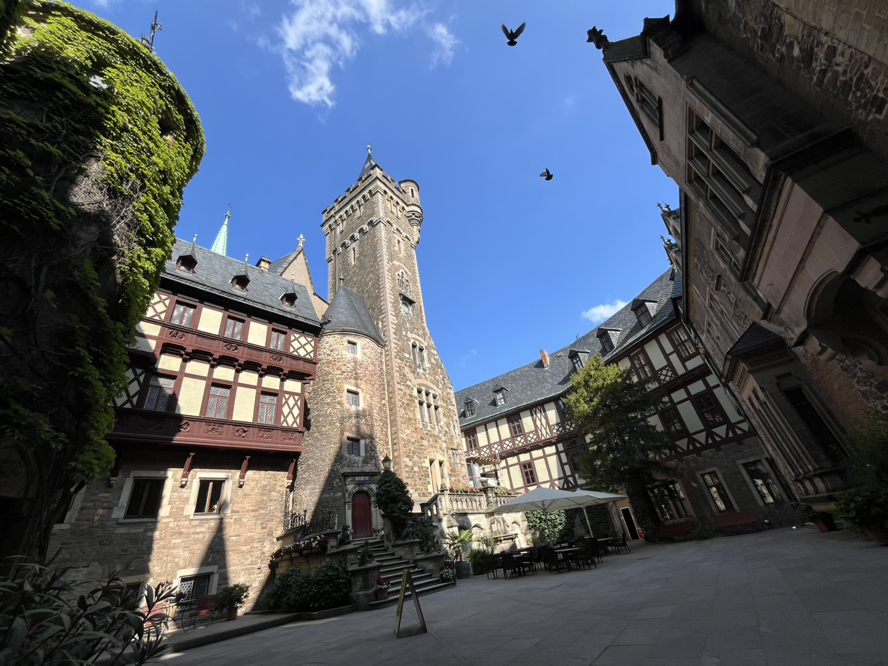
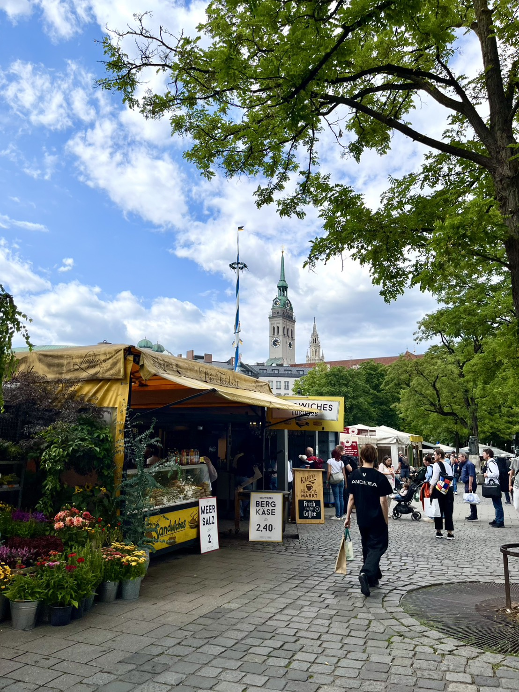
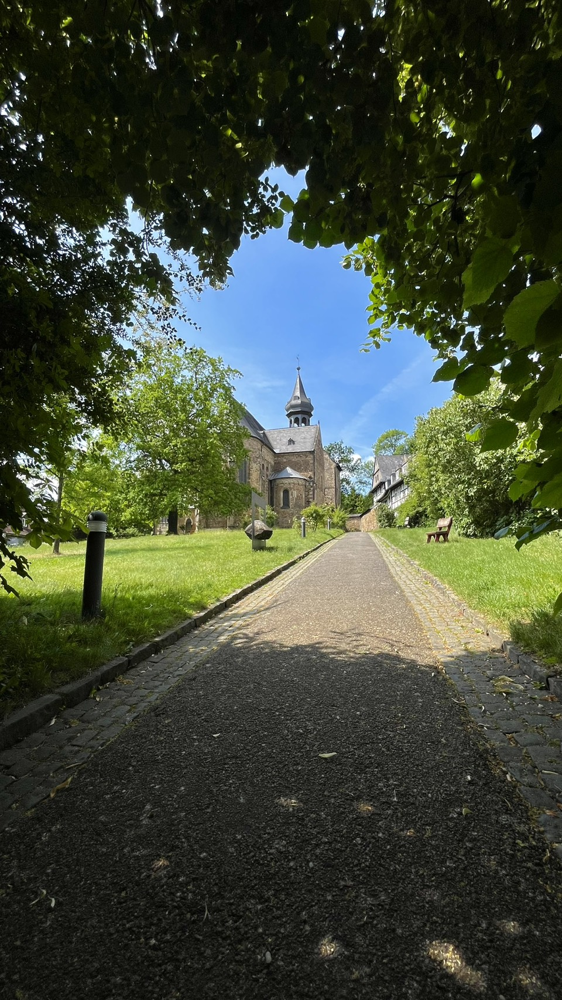
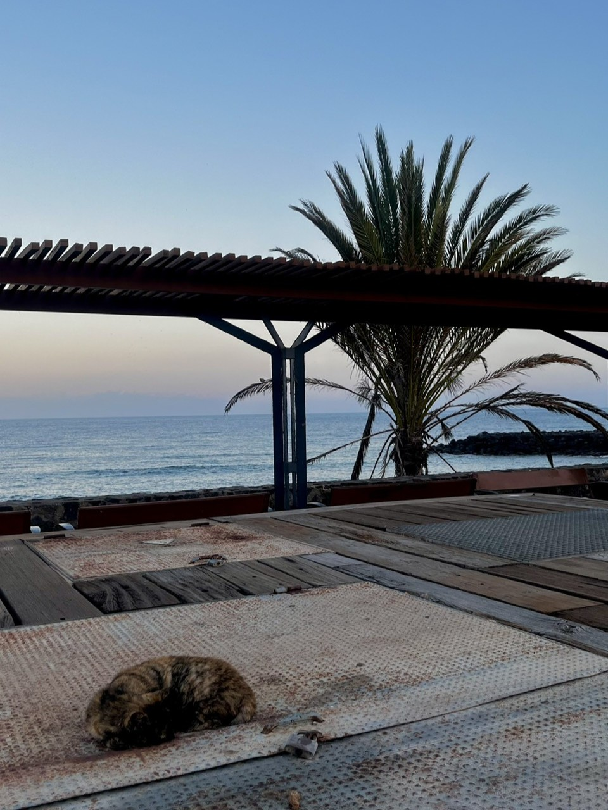
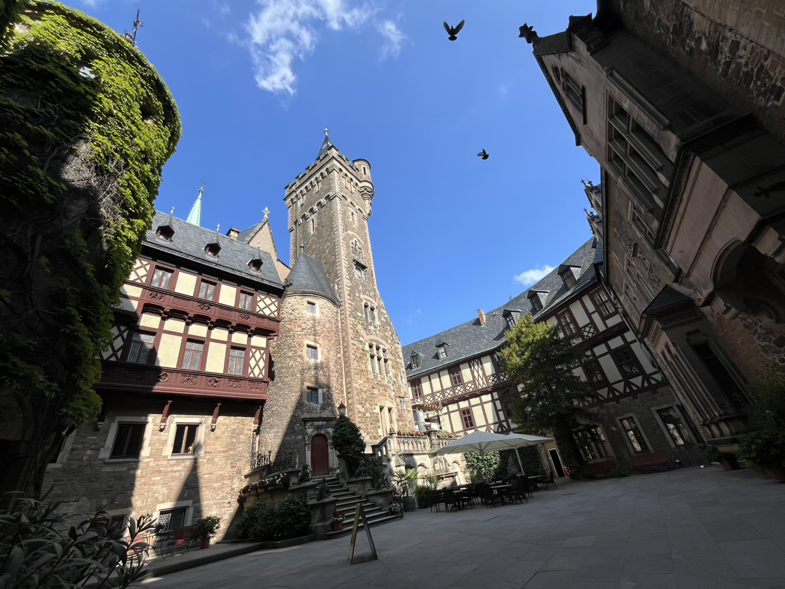
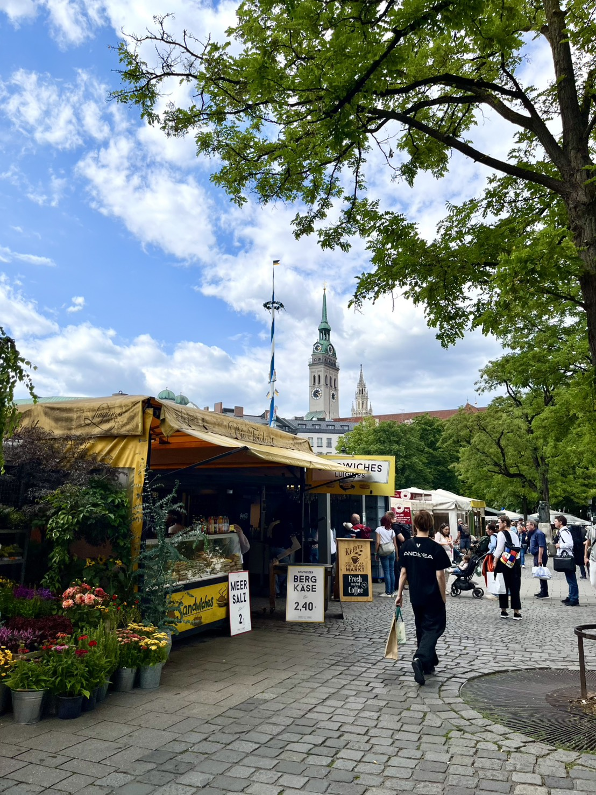
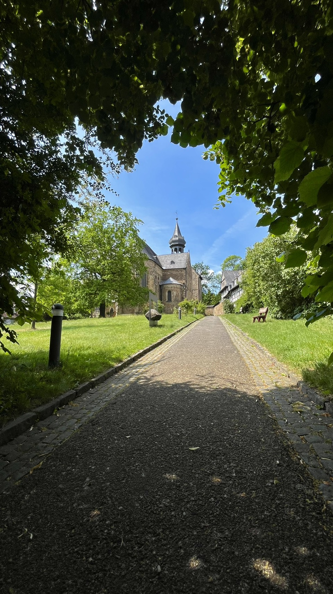
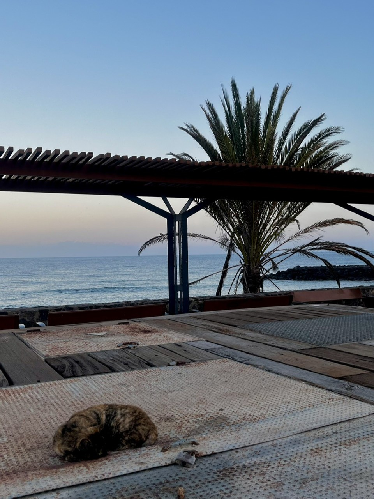

About Me
I’m an undergraduate Computer Science student at Lancaster University Leipzig, originally from Japan. I am
exploring the interest still, but the
intersection between technology and human-centered design. I’m especially interested in how users move
through interfaces and how small design
decisions impact clarity and comfort.
I don’t see myself as a “typical programmer” – I’m more interested in how things feel and how people
actually use them.
I learned the basics of UI/UX design principles. My CS background has given me exposure to topics such as
Algorithms, AI, neural networks, and
basic network systems, but I’m especially drawn to work where I can connect technology with clear, gentle
user experiences.
I speak Japanese (native) and English (around C1 level).
Outside of screens, I like photographing oceans, lakes, towns, and night skies, and spending time with my
dogs. I’m interested in internships or
junior roles where I can grow my design and product sense while contributing to real teams.
 






